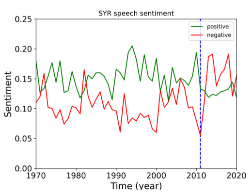

Exploring UN speeches and their relation with World Happiness data
Oct 2021 ~ MSc Course "Fundamentals os Data Science"
Length: 2w (at 0.5 FTE)
Programming language: Python (Pandas, NumPy, Matplotlib, seaborn, RE, NLTK,
wordclound, scikit-learn, LightGBM)
Data:
- UN yearly speeches from every country from 1970 to 2020
- World Happiness data about each country from 2005 to 2020, containing features such as the overall happiness
of the country, its GDP, life expectancy, and freedom to make choices
Problem description:
Explore, pre-process, and combine UN speeches with Life Ladder data to perform sentiment
analysis, predict a country's happiness index, and classify the region of a speech
Approach:
Prior to merging, the two datasets were cleaned and pre-processed by summarizing the features,
filling the missing entries using Linear Interpolation, lemmatizing the speeches, and deriving additional
variables such as the number of words, the average sentence length, and the most iconic
words of each speech (the ones with the largest TF-IDF score). Then, the sentiment was extracted
using VADER.
When it comes to the Machine Leaning tasks, one-hot encoding was applied to the categorical
features before the data was split into 80/20 training-test sets. Then, two LightGBM models, one
for regression and one for multi-class classification, were designed with a randomized search,
5-fold cross-validation method to find better hyperparameters.
Results:
Analyzing the evolution of the positive and negative sentiments over time for Syria, one can
observe the impact of the civil war that started in 2011. This manifested in the negative sentiment overcoming the
positive one, as can be seen below.

Next, the LightGBM model predicting the happiness of a country looking at its UN speeches turned out
to be inaccurate, scoring an R2 of roughly 33%. On the other hand, the LightGBM designed to
handle the multi-class classification of speakings per region registered an accuracy of 73% after
its hyperparameters were tuned.